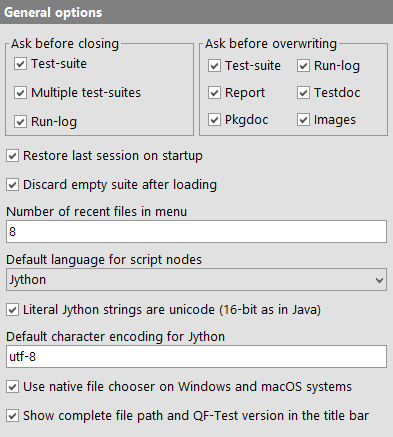
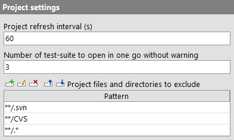
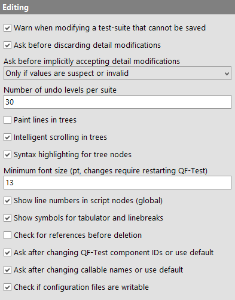
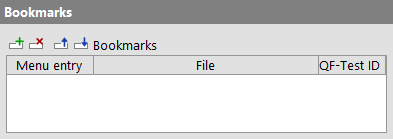
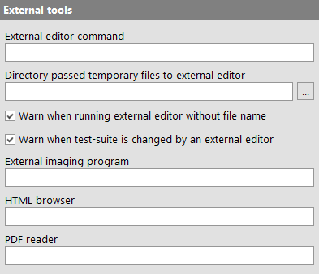
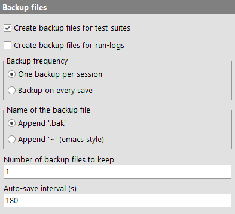
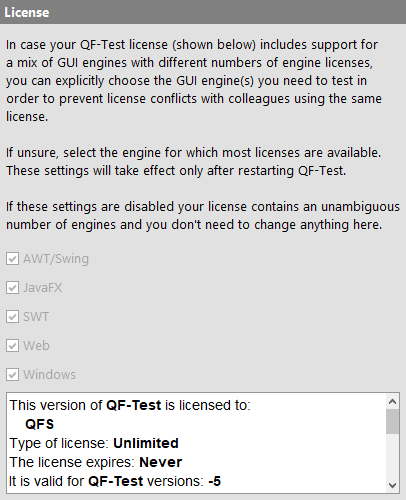
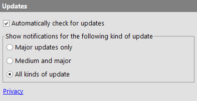

| Version 6.0.3 |
This is the node for general QF-Test settings.
|
|  | ||
|
| Figure 37.2: General options | ||
When a test-suite or a test run-log has been modified, QF-Test asks whether it should be saved before it closes its main window. That query can be suppressed by turning off this option. Be warned that auto saving is not implemented yet, so you may lose data if you forget to save before closing.
When you try to save a test-suite or a run-log or generate a report, pgkdoc or testdoc or save the image of a 'Check image' over an existing file or directory, QF-Test asks for confirmation unless you turn off the option for the respective type of file.
If this option is set and QF-Test is opened in the workbench view, the previous session is restored by loading previously opened test-suites and selecting the previously selected node in each suite. If one or more test-suites are specified on the command line, this are loaded in addition to the previous session and receive the initial focus on startup.
A common situation in daily work is that a test-suite is loaded right after starting QF-Test. In that case the initial empty test-suite is typically unwanted and even a burden. Setting this option will cause the initial suite to be closed automatically.
The »File« menu offers quick access to recently used test-suites or run-logs. This option determines the maximum number of recent file entries in the menu.
This option can be set to either "Jython", "Groovy" or "JavaScript" and determines the default setting for the 'Script language' attribute of newly created 'Server script' or 'SUT script' nodes.
This option defines how to treat literal strings (explicitly specified string constants like
"abc") in Jython scripts in 'Server script' and 'SUT script' nodes,
'Condition' attributes in 'If' and other nodes as well as the interactive Jython
terminals for QF-Test and the SUT.
If set, it defines that literal Jython strings should be treated as 16-bit unicode strings, just like in Java itself. Otherwise literal strings are 8-bit Python 2 strings that don't integrate well with Java and thus QF-Test. Please see subsection 11.3.4 for detailed information and examples.
If QF-Test encounters an existing older system configuration, the default value in QF-Test is off, meaning 8-bit literal strings. For new installations the option is turned on.
This option defines the default encoding for converting between Jython 16-bit unicode strings and 8-bit
byte strings. It applies to explicit conversions like str(...) and to implicit conversions.
If the previous option Literal Jython strings are unicode (16-bit as in Java) is unset, implicit conversions
include all occurrences of literal Jython strings (explicitly specified string constants like
"abc"). Please see subsection 11.3.4 for detailed information and
examples.
5.3+ Starting with QF-Test 5.3 the default value is "utf-8" (it used to be "latin-1"). Existing system configurations are not be affected by that change.
On Windows or macOS systems the native file chooser is more advanced and more convenient to use than the Swing file chooser so QF-Test uses the native one by default. In case you prefer the Swing file chooser you can get it back by deactivating this option.
If set, QF-Test shows the full path of the current test-suite and the QF-Test version in the title bar of the main window.
There are several options that influence the way QF-Test manages and displays projects.
|
|  | ||
|
| Figure 37.3: Projects | ||
The interval at which a project automatically gets completely refreshed. You can refresh a directory at any time by selecting it and pressing [F5]. To refresh the complete hierarchy below the selected directory, press [Shift-F5] instead.
From the project tree you can open all test-suites contained in one directory hierarchy in one go. If you accidentally select too many test-suites, QF-Test will first issue a warning with the number of test-suites, allowing you to cancel that action. This option determines the threshold for that warning.
In many cases a directory hierarchy holds files and directories that don't really belong to a project, most notably sub-directories created by version control systems like subversion or cvs. In this option you can specify patterns for files and directories to generally exclude from projects.
The patterns used here are not regular expressions but a simpler form often used by development tools: An '*' stands for any number of characters up to the next file separator - for compatibility reasons only forward '/' is used - while '**' means 0 or more characters of any kind, including '/'. Every pattern is relative to the root directory of the project. Some examples:
**/.svn
.svn at any depth.**/.*
deprecated
deprecated directly below the project root.These options are used to configure various settings regarding editing in the tree or detail view.
|
|  | ||
|
| Figure 37.4: Editing | ||
If saving test-suites is prohibited, for example when working without a license, QF-Test will warn you that you will not be able to save your changes when a test-suite is modified for the first time. Deactivating this option suppresses that warning.
When you have started making changes to an existing or newly inserted node and then abort by pressing [Escape] or clicking the "Cancel" button, QF-Test asks for confirmation before discard your modifications. This dialog can be suppressed by disabling this option. In this case, please be aware that - especially in case of scripts - a lot of work may get lost in case of a mistake.
A very common mistake made while editing a test-suite is to forget pressing OK after making changes in the detail view of a node before switching to some other node, running a test, etc. If that happens QF-Test can either accept the modified values automatically or ask for confirmation by popping up a dialog with the detail view. The following options are available:
This option doesn't change the effect of explicitly discarding your modifications with the Cancel button or by pressing [Escape].
This option lets you set the number of edits that can be undone in a test-suite or run-log.
The default methods for interacting with Swing trees are not ideal. Moving the selection around causes a log of unnecessary horizontal scrolling and Swing has the tendency to scroll trees to a position where little context is visible around the selected node.
Because tree navigation is essential for QF-Test, some of these methods are implemented differently to provide a more natural interface and to make sure that there is always enough context visible around the selected node. However, your mileage may vary, so if you don't like the alternative methods you can switch back to the default Swing way of things by deactivating this option.
This option controls activation of syntax highlighting for tree nodes within test-suites and run-logs. If active, specific text parts of nodes (e.g. node name, parameters, client) are outlined in different colors and styles. This significantly improves readability.
This option lets you set the minimum font size (as point value) used within QF-Test. A change in this value becomes operative after restarting QF-Test.
If this option is set, line numbers are shown in 'SUT script' and 'Server script' nodes.
If this option is set, QF-Test shows symbols for tabulator and linebreaks in tables and relevant textareas.
If this option is set, QF-Test searches for references of nodes before nodes will be deleted. If references can be found, they will be shown in a dialog.
If this option is set, QF-Test asks whether the user wants to update the QF-Test component IDs of any referring node after the QF-Test ID of a component has been changed. If this option isn't set QF-Test updates all references in case of unique QF-Test component IDs.
If this option is set, QF-Test asks whether the user wants to update the callable names (i.e. procedures, packages, tests and dependencies) of any referring node after the name of a callable node has been changed. If this option isn't set QF-Test updates all references in case of unique names.
If this option is set, QF-Test checks whether the configuration files have writing permissions once opening the 'Options' dialog. If one configuration file has no writing privileges, QF-Test will show a message.
Here you can edit your bookmarks, a list of files and nodes that can be accessed quickly via the menu »File«-»Bookmarks«.
4.0+ Instead of a file you can also specify a directory. When the respective bookmark is selected, the file selection dialog is opened directly for this directory. The QF-Test ID for the node is ignored in this case.
|
|  | ||
|
| Figure 37.5: Bookmarks | ||
Though you can also create new bookmarks manually, it is preferable to use the menu item »File«-»Add to bookmarks« to add a bookmark for a whole test-suite or run-log or to select »Add to bookmarks« in the context menu of a node in a test-suite to add a bookmark for this specific node.
The following options determine which external programs are called by QF-Test.
|
|  | ||
|
| Figure 37.6: External tools options | ||
Scripts can be edited in an external editor by pressing
[Alt-Return] or by clicking the
 button above the text
area. The contents of the text area are then saved to a
temporary file and the external editor is run to edit that file.
It is recommended to define a name for the script before opening it
in the external editor (see also Warn when running external editor without file name).
Otherwise a random number is chosen as file name, which makes it
difficult to distinguish several scripts opened in the external editor.
button above the text
area. The contents of the text area are then saved to a
temporary file and the external editor is run to edit that file.
It is recommended to define a name for the script before opening it
in the external editor (see also Warn when running external editor without file name).
Otherwise a random number is chosen as file name, which makes it
difficult to distinguish several scripts opened in the external editor.
Changes made to an external file are picked up automatically by QF-Test. Depending on your settings, you may get a warning message when this happens (see Warn when test-suite is changed by an external editor). In case you are tempted to edit your script code parallel in the internal QF-Test editor: These changes are also saved in the temporary file. Editors like jEdit on their part are smart enough to detect the change and reload the file automatically.
This option determines the external editor command to use. There are two variants, the plain name of an executable file or a complex command including options. The latter is distinguished by the string $(file) which is the placeholder for the name of the temporary file. Additionally, $(line) may be used to pass the current line number to the editor as well.
Note The $(file)/$(line) syntax is used simply to avoid yet another different convention for variable attributes. No standard QF-Test $(...) variable expansion is taking place.
Plain commands need never be quoted. Examples are:
Complex commands on the other hand may need to use quotes, especially on windows. QF-Test takes care of quoting the $(file) argument itself:
If this option is left empty, the value of the environment variable EDITOR is used, if it is defined when QF-Test is started.
This option can be used to change the directory in which QF-Test saves temporary files for opening in an external editor (see External editor command). If empty, the user configuration directory is used.
Display a warning message when changes to a script made by an external editor are picked up by QF-Test (see also External editor command).
Display a warning message when a script without name is opened in an external editor (see also External editor command).
The 'Image' of a 'Check image' node can be edited in an external imaging program. The image is saved to a temporary PNG file and the external imaging program is run to edit that file. When finished editing, the file must be saved and the program exited. QF-Test will read the image back from the temporary file.
This option determines the program to use for the operation. There are two variants, the plain name of an executable file or a complex command including options. The latter is distinguished by the string $(file) which is the placeholder for the name of the temporary file.
Note The $(file)/$(line) syntax is used simply to avoid yet another different convention for variable attributes. No standard QF-Test $(...) variable expansion is taking place.
Plain commands need never be quoted. Examples are:
Complex commands on the other hand may need to use quotes, especially on windows. QF-Test takes care of quoting the $(file) argument itself:
This option allows you to set the HTML browser used to open HTML pages (e.g. report files or the context
sensitive help). You can specify a complex command using '$url' as
placeholder for the URL to show, e.g.
netscape -remote openURL($url)
or just a simple command like
firefox
in which case the URL is passed as the last argument. If the option is empty the system
browser is used.
This option allows you to set the program used
to display PDF files. This is necessary to open the PDF manual
from the »Help« menu. If the option is empty, the
program associated with the .pdf extension is used.
Unless told to do otherwise, QF-Test creates backups of existing files when saving test-suites or run-logs. These backup files are useful only in protecting against failures when saving a file. They are by no means a replacement for proper system backups. The following options determine if, when and how backup files are created.
|
|  | ||
|
| Figure 37.7: Backup file options | ||
Backup files for test-suites are created only if this option is activated. Please be careful and don't turn it off without a good reason, such as using a version control system for test-suites which obviates the need to create backups. Just think about the amount of work that goes into creating a useful test-suite and imagine the frustration if it gets destroyed accidentally.
Usually a run-log is far less valuable than a test-suite, so there is a separate option that determines whether backups are created for run-logs.
There are two possibilities for the frequency with which backup files are created.
With the first option, "One backup per session", QF-Test creates a backup file only the first time a file is saved. If you continue editing the suite or run-log and save it again, the backup file is left unchanged. Only when you edit a different file or restart QF-Test, a new backup is created. This setting is useful is you keep only one backup per test-suite.
If, on the other hand, you keep multiple backups per suite, "Backup on every save" may be the preferred choice.
Like many other things, the conventions for the names of backup
files differ between Unix and Windows. While the common
extension for a backup file under Windows is
.bak, there are many variants under Unix. One of
the most common is appending a tilde character
'~'.
You can keep more than one backup file for each test-suite or
run-log. If you do so, backup files are named after the scheme
.bak1, .bak2... for the
.bak naming style and ~1~,
~2~... for the other. The most recent backup is
always numbered 1. When a new backup is created, the old
number 1 is renamed to 2, 2 renamed to 3 and so on. When the
maximum is reached, the oldest files are deleted.
Interval after which a modified test-suite is saved automatically. Setting this value to 0 will disable auto-saving. Otherwise values less than about 20 seconds are not useful. Run-logs are never saved automatically. Auto-save files are created in the same directory as the test-suite or - in the case of new suites that have never been saved - in the user configuration directory.
|
|  |
||
|
| Figure 37.8: Library path option | ||
This is a list of directories that are searched for test-suites whenever a suite reference is given as a relative path that cannot be resolved relative to the current suite. This includes direct suite references in the 'Procedure name' attribute of a 'Procedure call' or a 'Component' 'QF-Test ID' reference as well as suites included through the 'Include files' attribute of the 'Test-suite' node.
The include directory belonging to the current
version of QF-Test is automatically and invisibly placed at the
end of the library path. This ensures that the common library
qfs.qft can always be included without knowing
its actual location and that its version is matching the
version of QF-Test at all times.
Note If the command line argument
-libpath <path> is given it will override the settings of
this option. In interactive mode, the value of the command line
argument is displayed here, but it will not be saved with the
system configuration unless it is modified.
|
|  | ||
|
| Figure 37.9: License options | ||
Normally QF-Test license bundles contain a homogeneous mix of GUI engines. For example, a bundle of QF-Test/swing licenses only supports the AWT/Swing engine, QF-Test/suite licenses support both AWT/Swing and SWT for all included licenses. For these kinds of simple licenses these license settings can be ignored.
A small problem arises in case of mixed engine licenses where some GUI engine is included only for a part of the licenses. An example for this is a license bundle that was formerly purchased for qftestJUI, upgraded to QF-Test/suite with QF-Test 2.0 and then extended with further QF-Test/swing licenses, say two licenses for QF-Test/suite and another two for QF-Test/swing. Such a license allows running four concurrent instances of QF-Test, but only two of these can make use of the SWT engine. If more than two instances are started with SWT support there will be a license conflict.
When QF-Test detects such a mixed license bundle for the first time it asks the user which
engine licenses to use. The choice made then can be changed here at any time. Besides,
QF-Test can be started with the command line argument -engine <engine> to override the
supported GUI engines for this execution.
To get the latest features and bug-fixes QF-Test can check for updates automatically. The following options determine whether to check and when to notify for available updates. Using the command line argument -noupdatecheck you can disable the automatic update check.
|
|  | ||
|
| Figure 37.10: Update options | ||
QF-Test automatically checks for updates upon startup. Deactivating this option disables this feature.
If a new version is available QF-Test shows a notification with links to the release notes and the download page. This option limits those notifications to specific kinds of versions.
| Last update: 9/6/2022 Copyright © 1999-2022 Quality First Software GmbH |